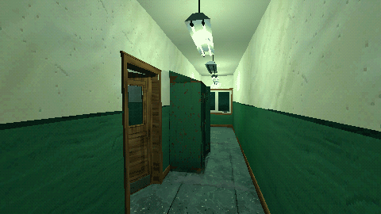
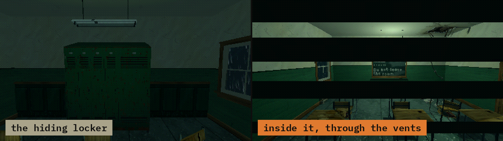

Tutorials › Hide in a Locker
How to Hide in a Locker in Godot 4
Hide the player in a locker; a chasing creature loses them, and can search the lockers.

A level script that lets the player hide in a locker and makes a chasing creature lose them. When the door shuts on the player, the creature drops its target and the camera moves to the locker's peek point behind the vents; when the player steps out, both go back. A creature that searches the room can ask whether anyone is inside, pull the door open and give chase.
Script: locker_hiding.gd (MIT) · Godot 4.3 or newer · its folder on GitHub

How to use it
- Put your lockers in the group
lockers. - Add
locker_hiding.gdto the level's root Node3D and setcreatureandcamerain the Inspector. - When your creature reaches a locker, call
search(locker, player).
What it needs
- A locker scene with the signals
player_hidden(body)andplayer_left(body)and the methodspeek_point()(a Node3D at eye height behind the vents),is_occupied()andinteract(by). The hiding lockers of Haunted PSX Spaces (scenes/hiding_locker__<theme>.tscn) have them; a locker of your own works if it has the same. - A creature with a
targetproperty: the script sets it tonullor to the player.
Try it free
The lockers come with Haunted PSX Spaces. The Haunted PSX Free Sampler has free room pieces to build the room around them.
How it was tested
In Godot 4.3 and 4.7.2, with a stand-in locker that has the signals and methods above: when the player hides, the creature loses its target and the camera moves to the peek point; when the player steps out, the camera is back at the player's eyes and the creature is after them; search() opens an occupied locker and sets the creature on the player, and leaves an empty one shut.
The code
extends Node3D
## How to Hide in a Locker in Godot 4
## Cordatix Godot 4 PSX tutorials, MIT licensed: https://github.com/GoldenSparrow-Dev/cordatix-godot-psx-tutorials
## The devlog: https://cordatix.itch.io/haunted-psx-spaces/devlog/1722819/how-to-hide-in-a-locker-in-godot-4-haunted-psx-spaces
## The chasing creature (any node with a `target` property) and the player's camera.
@export var creature: Node3D
@export var camera: Camera3D
var _eye: Transform3D
func _ready() -> void:
for locker in get_tree().get_nodes_in_group("lockers"):
locker.player_hidden.connect(_on_hidden.bind(locker))
locker.player_left.connect(_on_left)
## Shut in: the creature loses the player, and the camera looks out through the vents.
func _on_hidden(_body: Node3D, locker: Node3D) -> void:
creature.set("target", null)
_eye = camera.transform
camera.global_transform = locker.peek_point().global_transform
## Out again: the camera goes back to the player's eyes, and the creature is after the player.
func _on_left(body: Node3D) -> void:
camera.transform = _eye
creature.set("target", body)
## A creature that searches a room can open the lockers someone hides in: is_occupied() says so.
func search(locker: Node3D, player: Node3D) -> void:
if locker.is_occupied():
locker.interact(creature)
creature.set("target", player)
The devlog and the pack
The step-by-step walkthrough is the devlog How to Hide in a Locker in Godot 4 (Haunted PSX Spaces) on itch.io, written for Haunted PSX Spaces, a PS1-style asset pack by Cordatix for Godot 4, Unity, Unreal and Blender.